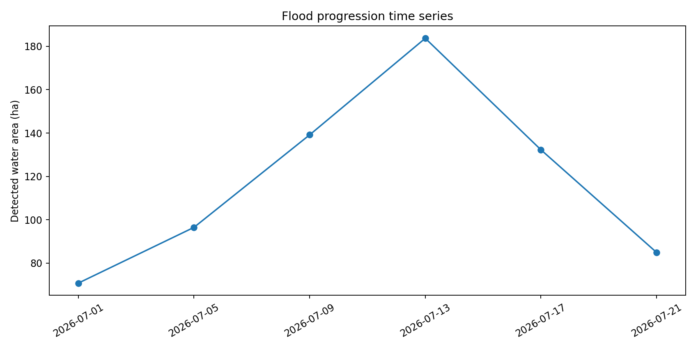
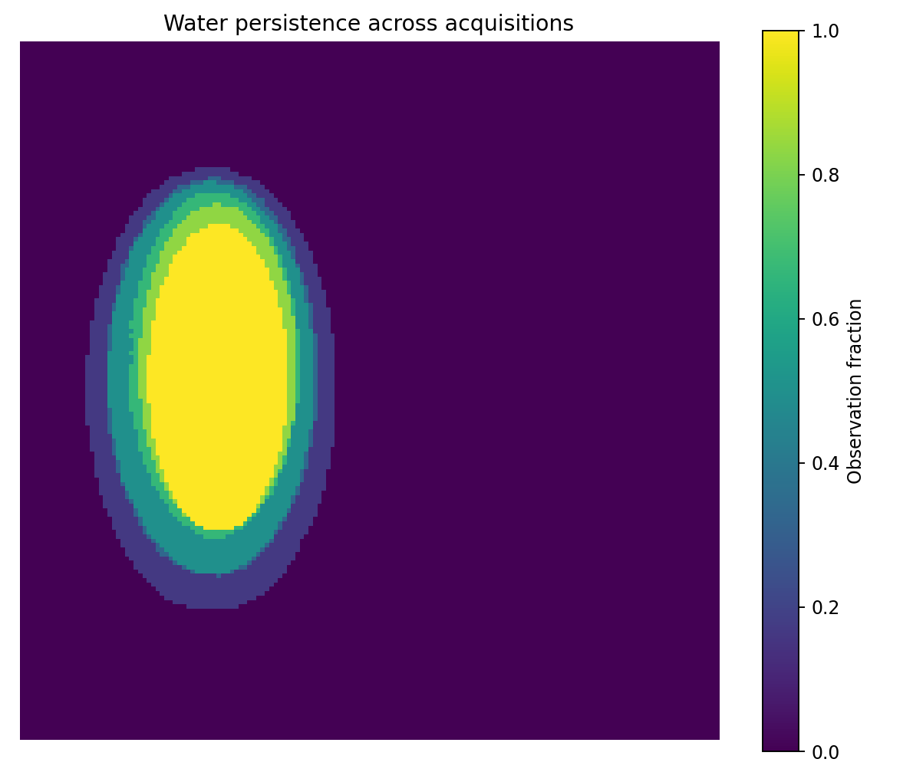

OpenSat Mission Lab v1.8
Multi-date optical/SAR flood time-series validation
Status
PASS
Scenes
6
Peak area
183.7 ha
Mean F1
0.990


Acquisition timeline
| Date | Area | New | Receded | F1 | IoU |
|---|---|---|---|---|---|
| 2026-07-01 | 70.76 | 0.0 | 0.0 | 1.0 | 1.0 |
| 2026-07-05 | 96.48 | 25.72 | 0.0 | 0.989708 | 0.979625 |
| 2026-07-09 | 139.16 | 42.68 | 0.0 | 0.983667 | 0.967859 |
| 2026-07-13 | 183.72 | 44.56 | 0.0 | 0.987159 | 0.974643 |
| 2026-07-17 | 132.28 | 0.0 | 51.44 | 0.985815 | 0.972026 |
| 2026-07-21 | 84.92 | 0.0 | 47.36 | 0.992056 | 0.984237 |